本说明主要包括开具增值税发票的有关依据、适用范围及办理流程。
开具增值税发票的依据
根据《中华人民共和国增值税法》（2024年12月25日第十四届全国人民代表大会常务委员会第十三次会议通过，自2026年1月1日起施行）及《企业所得税税前扣除凭证管理办法》（国家税务总局公告2018年第28号）有关规定，自2026年1月1日起，领取劳务费及相关款项的人员，均须提供劳务发票，作为财务发放依据。
根据当前执行安排，自2026年4月起，相关款项原则上应在提交劳务发票后发放。鉴于该要求自本月起正式执行，请有关人员及时补开2026年1月至4月期间对应的劳务发票，以免影响后续款项发放。
重要提示：未按要求提交增值税发票的，相关款项原则上不予发放。
适用范围
| 款项类型 | 说明 |
|---|---|
| 劳务费 | 包括各类按劳务形式发放的费用 |
| 工资薪酬中的劳务费 | 我院部分老师薪酬以劳务费方式领取，也适用本要求 |
| 报告费 | 包括学术报告等相关费用 |
| 短访津贴 | 适用于短期来访相关津贴发放 |
个人如何开具增值税发票
个人可通过“电子税务局”APP向税务机关申请代开增值税发票。在手机应用市场搜索“电子税务局”（图标如下图），下载安装，进行注册，登录后可申请代开劳务发票。
自然人代开发票申请步骤
第一步
首页左上角定位选择“北京市”，点击首页“代开增值税发票”，根据系统提示完成人脸识别。
第二步
点击“货物、服务等一般代开”。
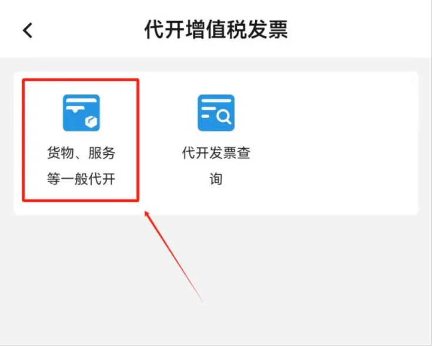
第三步
点击“新增代开申请”，进入购销信息填写页面。
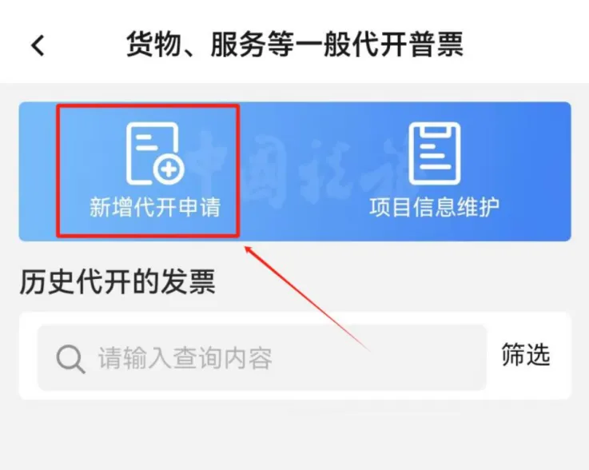
第四步
点击“购销双方”一栏中的“销售方”，核验个人身份信息是否正确（销售方仅能为登录APP的用户本人），无误后点击“购买方”，点击“添加购买方”，选择后“名称”填写“北京雁栖湖应用数学研究院”，填写后“统一社会信用代码/身份证件号”位置会自动带出“52110000MJ0166456X”，填写完成后点击“保存”（如下图）。
点击“应税销售行为发生地”一栏中的“添加应税发生地”，据实选择应税发生地（即劳务发生地），选择完成后点击“保存”（后续的审核环节将由应税发生地税务机关负责审核）。
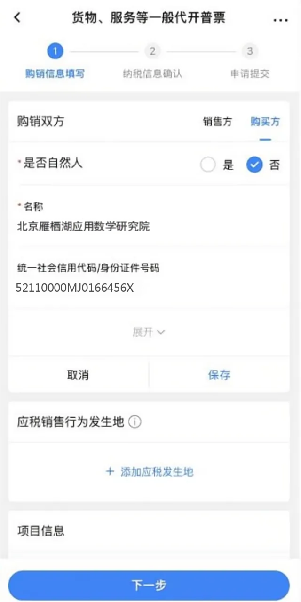
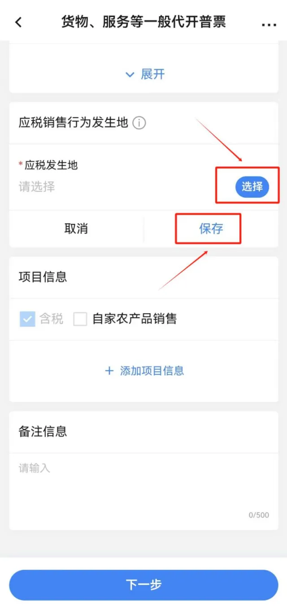
点击“项目信息”一栏中的“添加项目信息”。
“项目编号名称”选择“*现代服务*其他现代服务”，“项目简称”据实填写（如：劳务费/咨询费/讲课费等），“金额”栏据实填写开票金额（开票金额与含税应发数一致），“税率/征收率”选择“1%”，填写完成后点击“保存”。
“业务发生日期”按实际业务开始日期填写。如需在发票票面备注其他信息，可在“备注信息”一栏填写需要备注的内容，否则无需填写。点击“下一步”，进入纳税信息确认页面。
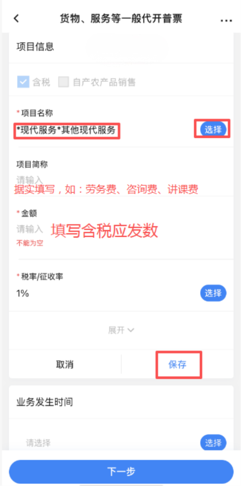
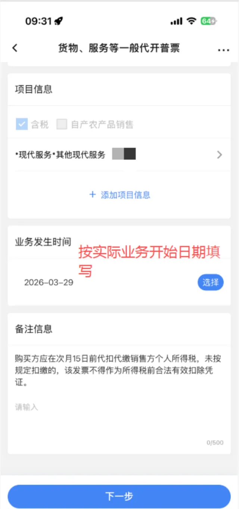
第五步
确认系统自动计算的应纳税费信息，无误后点击“提交”，显示“提交成功”后等待10S读条结束，选择“继续办理”等待税务机关审核即可。
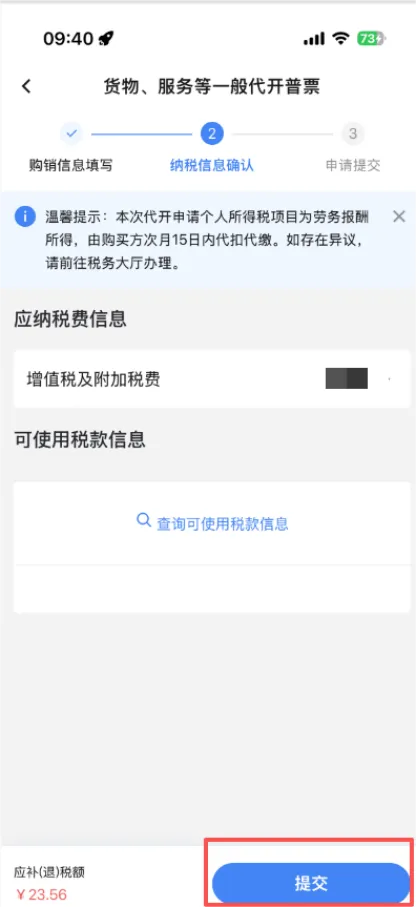
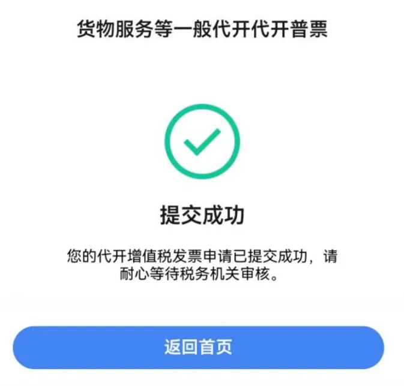
第六步
等待税务机关完成审核后选择“立即缴费”，选择“确定”，选择支付方式，完成税费缴纳。
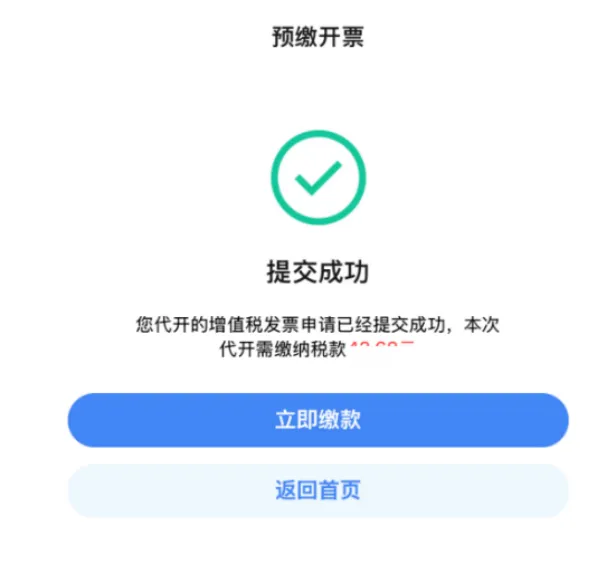
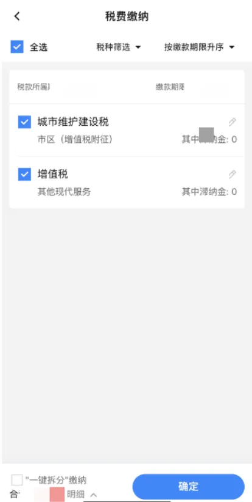
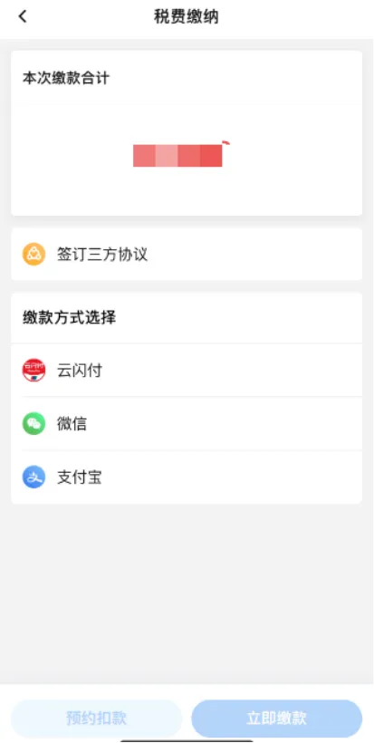
自然人代开发票开具与下载步骤
完成税款缴纳后，返回首页，点击首页“代开增值税发票”，点击“代开发票信息查询”，选择提交申请的起止日期，点击页面下方的“查询”。
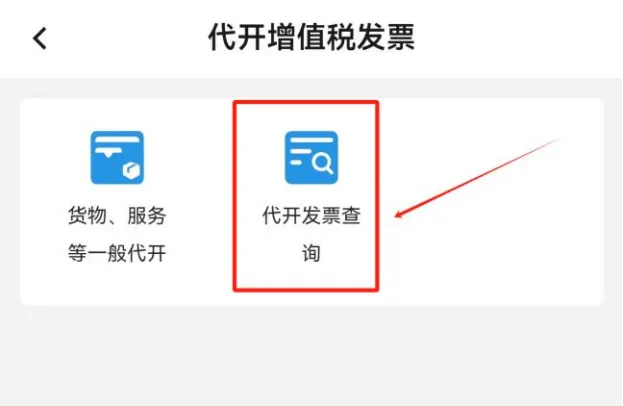
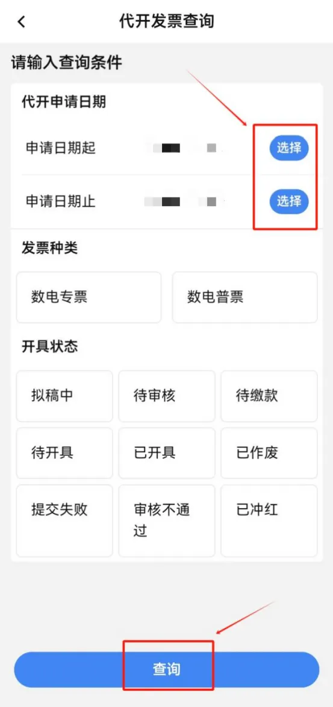
在查询结果中找到本次提交的申请，该条申请右上角状态为“待开具”，点击“开具发票”，右上角状态变为“已开具”，点击“下载发票”，即可查看并下载该发票（您可点击发票预览页面右上角“...”将发票分享至对方）。
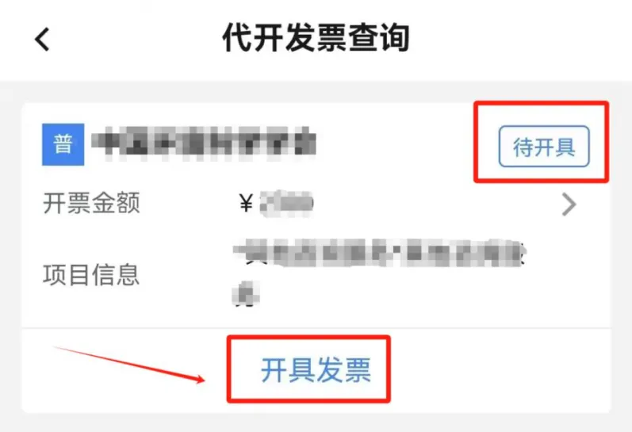
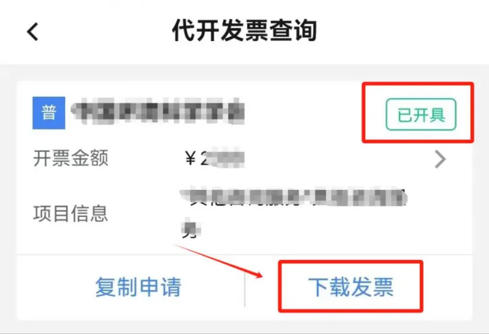
请将下载的增值税发票发送给相关人员，作为后续支付款项的凭证。
短访学者增值税发票上传说明
短访学者除按要求开具增值税发票外，还需在 BIMSA Panel 中上传对应发票文件。
操作步骤
- 登录 BIMSA Panel，进入 Personal → Allowance。
- “Total Pay”一栏显示的金额为应填写的开票金额，请按照该金额开具增值税发票。
- 发票开具完成后，请下载 OFD 格式文件，并在“VAT Invoice”栏中上传已开具的发票文件。
注意事项
- 根据目前执行要求，自2026年1月起，相关款项原则上应在提交增值税发票后发放。鉴于我单位自2026年4月起正式执行本项要求，请及时补开2026年1月至4月期间对应月份的发票，以免影响后续款项发放。
- 对后续月份已明确金额的相关款项，可根据系统显示信息提前开具并上传对应发票。
- 每月对应发票原则上应于当月25日前完成上传，逾期可能影响当月工资发放。
- 如页面中无上传按钮，表示各月份发票已上传完毕；如仍显示上传按钮，则表示相关月份发票尚未全部上传。
- 发票信息须准确无误。如单位名称、税号、金额等任一信息有误，或重复上传同一张发票，系统均将无法通过校验，相关发票将无法上传成功。
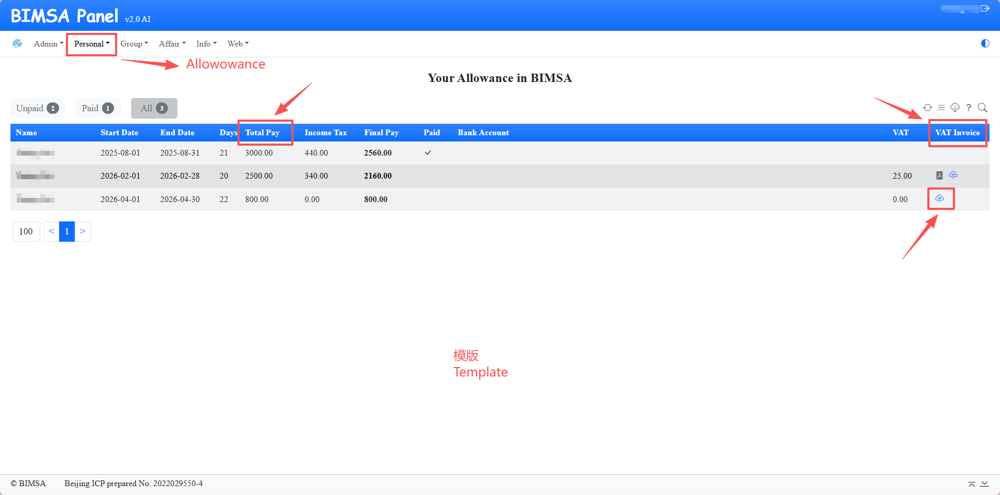
This guide explains the policy basis, scope of application, and procedures for issuing VAT invoices.
Policy Basis for VAT Invoice Issuance
According to the VAT Law of the People's Republic of China, adopted on December 25, 2024 and effective from January 1, 2026, and the Administrative Measures for Pre-tax Deduction Vouchers for Enterprise Income Tax (State Taxation Administration Announcement No. 28 of 2018), individuals receiving labor service fees and related payments must provide a labor service invoice from January 1, 2026 onward as supporting documentation for payment processing.
Under the current implementation arrangement, starting from April 2026, relevant payments should in principle be issued only after the labor service invoice has been submitted. Since this requirement has been formally enforced from this month, please promptly issue any outstanding invoices corresponding to the period from January 2026 through April 2026 to avoid affecting subsequent payments.
Important: If the required VAT invoice is not submitted, the related payment will in principle not be issued.
Scope of Application
| Payment Type | Description |
|---|---|
| Labor service fees | Includes all types of payments issued in the form of labor service compensation. |
| Labor service portion within salary payments | Some faculty members at our institute receive part of their compensation as labor service fees, which is also covered by this requirement. |
| Lecture or report fees | Includes payments related to academic reports and similar activities. |
| Short-term visit allowances | Applies to allowances issued in connection with short-term visits. |
How Individuals Can Apply for a VAT Invoice
Individuals may apply to the tax authority for the issuance of a VAT invoice through the “电子税务局” app. Please search for “电子税务局” in your mobile app store, download and install it, complete registration, and log in before submitting your application.
Steps for Individual Invoice Application
Step 1
On the app home page, set the location in the upper-left corner to “北京市”, then tap “代开增值税发票” on the home page and complete the facial recognition process as instructed.
Step 2
Tap “货物、服务等一般代开”.
Step 3
Tap “新增代开申请” to enter the purchase and sales information page.
Step 4
Under “购销双方”, first check the “销售方” information to make sure your personal information is correct. The seller can only be the logged-in user. Then tap “购买方”, choose “添加购买方”, and enter “北京雁栖湖应用数学研究院” in the name field. The Unified Social Credit Code / ID number field should then automatically display “52110000MJ0166456X”. After confirming the information, tap “保存”.
Under “应税销售行为发生地”, tap “添加应税发生地” and select the actual place where the taxable service occurred, namely the location where the labor service took place. After selection, tap “保存”. The subsequent review will be handled by the competent tax authority for that location.
Then tap “添加项目信息” under “项目信息”.
For non-royalty-related services, select “*现代服务*其他现代服务” for the project category. Fill in the project short name according to the actual payment type, such as labor service fee, consulting fee, or lecture fee. Enter the invoice amount according to the actual taxable amount payable, and choose “1%” for the tax rate / levy rate. After finishing, tap “保存”.
The “业务发生日期” should be the actual start date of the service. If additional remarks are needed on the invoice, fill them in under “备注信息”; otherwise, leave that field blank. Then tap “下一步” to enter the tax confirmation page.
Step 5
Check the tax amount automatically calculated by the system. If everything is correct, tap “提交”. After the message “提交成功” appears, wait about 10 seconds for the loading bar to finish, then select “继续办理” and wait for review by the tax authority.
Step 6
After the tax authority completes the review, choose “立即缴费”, confirm the payment, select a payment method, and complete the tax payment.
Issuing and Downloading the Invoice
After the tax payment is completed, return to the app home page, tap “代开增值税发票”, then tap “代开发票信息查询”. Select the start and end dates for your application and tap “查询” at the bottom of the page.
In the query results, locate your application. When the status at the upper right is “待开具”, tap “开具发票”. Once the status changes to “已开具”, tap “下载发票” to view and download the invoice. You may also use the “...” menu on the invoice preview page to share the invoice with the relevant person if needed.
Please send the downloaded VAT invoice to the relevant staff member as supporting documentation for the subsequent payment.
VAT Invoice Upload Instructions for Short-Term Visiting Scholars
In addition to issuing the required VAT invoice, short-term visiting scholars must also upload the corresponding invoice file in BIMSA Panel.
Procedure
- Log in to BIMSA Panel and go to Personal → Allowance.
- The amount shown under “Total Pay” is the amount to be used when issuing the VAT invoice. Please issue the invoice according to that amount.
- After the invoice has been issued, download the invoice file in OFD format and upload it under “VAT Invoice”.
Notes
- Under the current implementation arrangement, relevant payments should in principle be issued only after the VAT invoice has been submitted. Since this requirement has been formally enforced by our institute starting from April 2026, please promptly issue and upload invoices for the corresponding months from January 2026 through April 2026 to avoid affecting subsequent payments.
- If the amount for a future month has already been confirmed, the corresponding invoice may be issued and uploaded in advance based on the information shown in the system.
- In principle, the invoice for each month should be uploaded before the 25th of that month. Late submission may affect the salary payment for that month.
- If no upload button is shown on the page, it means the invoices for all applicable months have already been uploaded. If an upload button is still displayed, it means that the invoices for some relevant months have not yet all been uploaded.
- The invoice information must be accurate. If any item such as the entity name, tax number, or amount is incorrect, or if the same invoice is uploaded more than once, the system will not pass validation and the upload will fail.